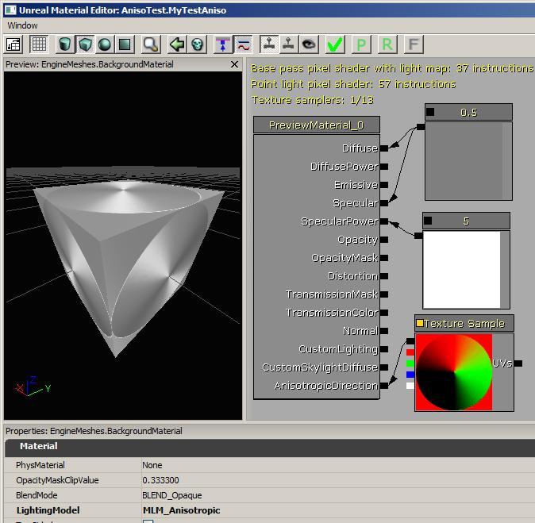
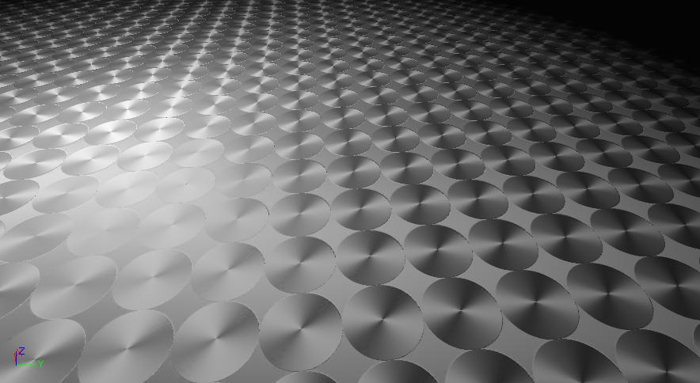

各向异性光照
概述
各项异性表面从表面上细致的纹理、槽或丝缕来获得它特有的外观，比如拉丝金属、CD的闪光面。当使用普通的材质进行光照时，计算仅考虑表面的法线向量、到光源的向量、及到相机的向量。但是对于各向异性表面，没有真正可以使用的连续的法线向量，因为每个丝缕或槽都有各种不同的法线方向，法线方向和槽的方向垂直。
在MLM_Anisotropic光照模型中，光照计算使用了槽或丝缕的切线方向来建模表面反射光源的方式。您必须使用AnisotropicDirection(各向异性方向)输入来把这个方向应用到材质上。
Unreal的静态光照贴图数据不能很好地捕获各向异性方向的信息，所以应该避免在这种类型的几何体上应用各向异性材质。但是，在Lightmass和 DominantLights(主要光源)?中，阴影是预计算的但是高光完全是动态的，所以各向异性材质在这种情况下可以工作的很好。
设置
要想使用各向异性光照模型，您仅需要设置LightingModel(光照模型)为MLM_Anisotropic即可。
丝缕纹路的默认方向是和UV空间中的“向下”的(0,1）相对应。如果您把材质视图改为球体，那么您将会看到圆圈型的高光特效，当人在非常亮的光照下在人的头发上可以看到这种效果：

切线空间
光照计算是在‘切线空间’中发生的，这个空间是由网格物体的UV坐标中的贴图映射的U和V方向定义的。红色的通道代表U(在贴图中从左到右的方向)，绿色的代表V(贴图中从上到下的方向)，蓝色的代表从贴图表面向外的方向。
要想在贴图(比如法线贴图)储切线空间向量的值，则方向需要编码在贴图的颜色中。范围0-255的代表-1到1之间的值，0在贴图中存储为颜色值127。这也是为什么一般R=127,G=127,B=255 的法线贴图代表向量(0,0,1)的原因，该向量从贴图表面的平面向外指出。
任何作为切线空间贴图的贴图在导入时使用其中一个TC_NormalMap压缩设置是很重要的，因为UnpackMin和UnPackMax属性需要正确地设置在给定的-1到1的范围内。应该禁用贴图的SRGB设置。
AnisotropicDirection(各向异性方向)
您为您的AnisotropicDirection(各向异性方向)输入指定的方向是由您展开您的网格物体的方式决定的。看一下您的网格物体的贴图，您是想使得丝缕纹路的方向按照横向还是纵向哪？ 如果丝缕纹路的方向是横向的，那么您可以使用值为 (1,0,0)的Constant3来代表那个方向。如果丝缕纹缕纹路是纵向的，那么您应该使用值(0,1,0)。
但是，如果纹路在某些区域是横向的在某些区域是纵向的，那么您将需要使用贴图映射来代表您的各向异性方向。在横向纹理的区域的描画颜色是R=255,G=127,B=127，在纵向纹理区域的描画颜色是R=127,G=255,B=127，并使用这个作为各向异性方向图。如果您的方向更加复杂，那么您需要计算您想使用那哪个颜色代表哪个方向。
这里是一个方向贴图的示例，方向同围绕圆圈的切线方向相对应。不幸的是，我不知道可以制作这种贴图的任何工具。这个圆型的贴图是通过简单的C编程来制作的。
使用那个贴图的材质：

使用那个材质的表面:

使用法线贴图
您也可以照常地制定法线贴图，法线贴图将会扰乱各项异性贴图的方向

示例包